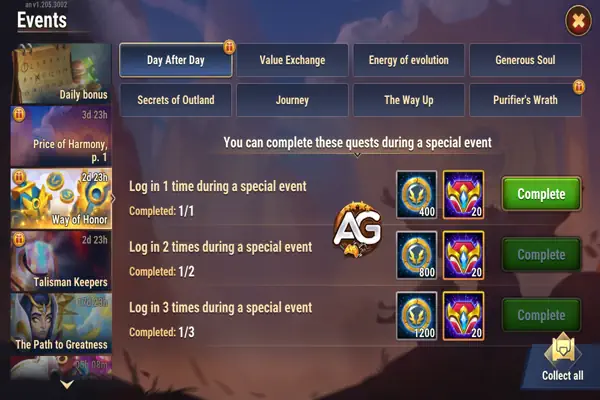
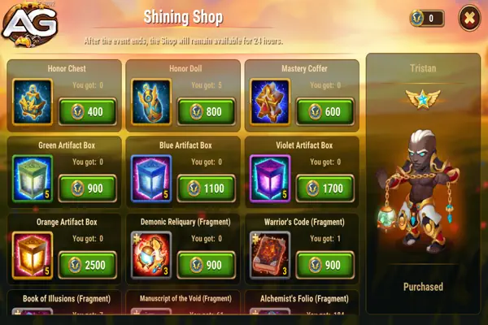
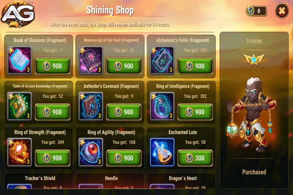

O Evento Caminho da Honra
O "Caminho da Honra" é um evento temático de facção em Hero Wars Alliance, focado em uma facção específica e seu herói em destaque. Este evento recorrente dura três dias, durante os quais os jogadores podem ganhar moedas do evento para gastar em uma loja especial. A loja oferece o herói em destaque e recursos para aprimorar os heróis da facção do evento.
Visão Geral da Facção Honra
A facção Honra, muitas vezes referida pela sigla F.A.R.T., é conhecida por sua presença formidável no campo de batalha. A equipe popular da F.A.R.T. consiste em Fafnir, Artemis, Tristan, mais dois tanques ou Oya. A adição mais recente a esta equipe é o herói Soleil. Cada herói traz forças únicas para a equipe:
- Soleil: Um novo herói que se destaca contra habilidades de controle e enfraquece as defesas inimigas.
- Fafnir: Fornece buffs e escudos para a equipe, aumentando a sobrevivência.
- Artemis: Causa alto dano crítico, especialmente quando fortalecida pela composição F.A.R.T.
- Tristan: Conhecido por alto dano, penetração de armadura e drenar energia de magos inimigos.
- Galahad: Torna-se incrivelmente poderoso quando usado na equipe Honra.
- Luther: Um tanque formidável que salta na equipe inimiga, causando caos.
- Helios: Contra-ataca dano crítico.
- Cornelius: Contra-ataca magos com a maior estatística de inteligência.
- Ishmael: Tem grande sinergia com Soleil devido às suas habilidades combinadas para enfraquecer inimigos.
Caminho da Honra
Raridade das Pedras de Alma
- Pedras de Alma Raras: Soleil, Fafnir, Tristan (disponíveis na loja do Caminho do Herói).
- Pedras de Alma de Dificuldade Média: Ishmael, Qing Mao, Cornelius, Markus, Luther (disponíveis em várias lojas).
- Pedras de Alma Fáceis: Artemis, Galahad, Helios (obtiníveis através da campanha).
Concentre-se em pedras de alma raras se o herói em destaque for raro. Se o herói não for raro, considere priorizar itens da loja.
Dicas e Estratégias para as Missões do Evento
O evento "Caminho da Honra" apresenta várias cadeias de missões, cada uma oferecendo recompensas valiosas:
1. Dia Após Dia

Hero Wars Alliance.
Ganhe Moedas do Evento e Pontos do Caminho do Herói fazendo login diariamente.
Estratégia:
- Consistência é a Chave: Certifique-se de fazer login todos os dias durante o evento. Configurar um lembrete pode ajudar a garantir que você não perca um dia.
- Planeje com Antecedência: Se você sabe que estará ocupado, faça login cedo no dia para evitar perder as recompensas de login.
2. Troca de Valor
Receba Moedas do Evento, Moedas de Artefato e Pontos do Caminho do Herói por gastar esmeraldas.
Estratégia:
- Gastos Inteligentes: Planeje seus gastos com esmeraldas com antecedência. Use esmeraldas para aprimoramentos e compras essenciais que estejam alinhadas com seus objetivos de longo prazo.
- Descontos e Ofertas: Procure por ofertas especiais e descontos que possam ocorrer durante o evento para maximizar a eficiência de suas esmeraldas.
3. Energia da Evolução
Ganhe Moedas do Evento por gastar energia.
Estratégia:
- Gestão de Energia: Use sua energia sabiamente. Concentre-se nos níveis da campanha que dropam itens valiosos ou pedras de alma de heróis que você precisa.
- Impulsos de Energia: Utilize poções de energia e outros itens que aumentam energia estrategicamente para maximizar o número de Moedas do Evento que você pode ganhar.
4. Alma Generosa
Obtenha Moedas do Evento por acumular pontos VIP.
Estratégia:
- Acumulação de Pontos VIP: Foque em atividades que dão pontos VIP. Comprar pacotes pequenos que você precisa também pode contribuir para seus pontos VIP.
- Missões Diárias: Complete missões diárias que recompensam pontos VIP para maximizar seus ganhos.
5. Segredos de Outland
Ganhe Moedas do Evento ao abrir baús em Outlands.
Estratégia:
- Abertura de Baús: Guarde baús de Outland especificamente para o evento. Planeje abrir o máximo de baús por dia para obter o máximo de Moedas do Evento.
- Chefes de Outland: Concentre-se em derrotar chefes de Outland que dropam as recompensas mais valiosas para suas necessidades atuais.
6. Jornada
Coletar Moedas do Evento e Pontos do Caminho do Herói iniciando Expedições.
Estratégia:
- Expedições: Comece suas expedições assim que o evento começar. Expedições que demoram mais, mas oferecem melhores recompensas, devem ser priorizadas.
- Tempo de Conclusão: Planeje o tempo de conclusão das suas expedições para garantir que elas terminem enquanto você está online, permitindo que você comece novas imediatamente.
7. Subindo o Caminho
Obtenha Moedas do Evento e Pontos do Caminho do Herói ao abrir baús na Torre.
Estratégia:
- Estratégia da Torre: Se você é iniciante, concentre-se em subir o máximo possível na Torre. Os andares mais altos oferecem melhores recompensas e permitem que você obtenha mais Moedas do Evento.
- Priorização de Baús: Ao abrir os baús, foque nos baús mais valiosos de itens laranja e priorize aqueles que são mais difíceis de obter para maximizar suas recompensas.
8. Promover Herói
Receba Moedas do Evento e Pontos do Caminho do Herói por promover o herói do evento.
Estratégia:
- Promoção de Herói: Concentre-se em promover o herói do evento durante o evento para maximizar suas Moedas do Evento e Pontos do Caminho do Herói.
- Alocação de Recursos: Alocar seus recursos para garantir que você tenha o suficiente para promover o herói de forma eficaz durante o evento.
Dicas para a Loja do Evento
Na loja do evento, você pode comprar vários itens, incluindo equipamentos, Fragmentos de Artefatos, Bonecas Demoníacas, que fornecem uma variedade de itens como pedras de alma de heróis, ouro, runas e caixas de artefatos.
Compras Recomendadas
- Caixas de Artefatos: Investir na compra de caixas de artefatos, especialmente as laranjas, é altamente recomendado. Ao abrir essas caixas, você tem a chance de obter itens necessários para aprimorar artefatos ao nível laranja, que são mais raros e valiosos.

Hero Wars Alliance.
- Artefatos Específicos do Evento: Foque em adquirir a arma, o livro e os anéis de artefatos do herói do evento, pois estes são mais raros e difíceis de obter em comparação com outros itens de aprimoramento de artefatos. Embora os anéis de artefatos sejam importantes, eles podem ser obtidos mais facilmente durante os eventos de heróis, abrindo esferas de invocação de Titãs.

Hero Wars Alliance.
Itens a Evitar
Evite comprar equipamentos de herói azul, roxo e laranja na loja do evento, pois eles são adquiridos de forma mais eficiente através do gasto de energia. Compre esses itens apenas se for absolutamente necessário.
Planejamento Estratégico
Fique de olho no calendário do Hero Wars em Alexandre Games e planeje seus recursos de acordo. Guarde esferas de invocação de Titãs para eventos de heróis para maximizar seus ganhos. Utilize o Caminho da Honra de forma eficiente para fortalecer sua equipe e aproveitar ao máximo as recompensas do evento.
 Tier List Hero Wars JvJ
Tier List Hero Wars JvJ  Times mais usados na Liga Royal HWA
Times mais usados na Liga Royal HWA